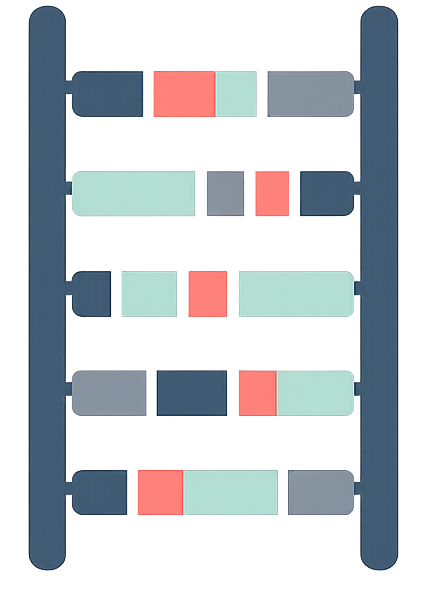

Phase Ladder Plot
Dark mode
A browser for visualizing haplotype phasing structure from a VCF file.
Unphased 0/1
Phased 0|1
Block 1
Block 2
Excluded
Waiting for a VCF file.
No data loaded. Select a VCF file to draw a Phase Ladder Plot.
Phase Ladder Plot